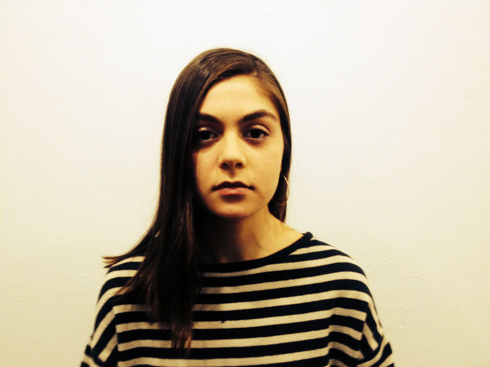

Rosie
A graphic designer living and working in New York City. Born and raised in NYC, I have a deep connection to the city's art, design, and culture. I believe in simplicity, organization, and attention to detail. Beyond my design practice I am interested in 3D design and cooking.